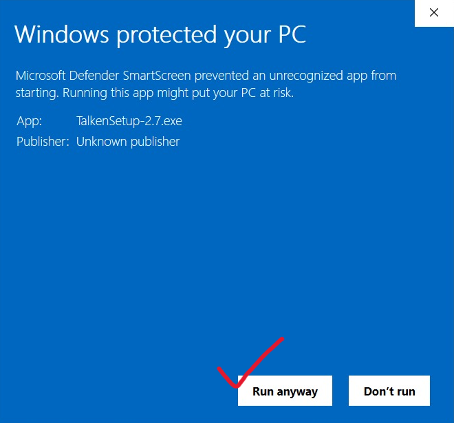

Download
Get the Windows setup package from the official GitHub release asset.
Talken ships as a complete Windows package with the app runtime and mesh networking components included. Download, install, sign in, and stay reachable from the tray.
Windows will show a “publisher unknown” warning the first time — here’s why, and how to continue.
Get the Windows setup package from the official GitHub release asset.
The installer brings the desktop app, runtime, and network pieces together.
Create or open your Talken identity and connect your own cloud storage.
Talken can run quietly in the background and keep you reachable.
This is expected, and we’d rather explain it than have you wonder.
When you run the installer, Microsoft Defender SmartScreen shows a blue “Windows protected your PC” screen saying the publisher is unknown.
Why it happens: Windows only recognises apps signed with a code-signing certificate. Those cost upwards of $200 per year, and Talken is a small independent project — that money isn’t something we can justify yet. Unsigned simply means “Windows doesn’t know who made this”. It does not mean anything was detected in the file.
To continue: click More info on that dialog, then Run anyway. You only need to do this once per version.

Don’t just take our word for it. Only ever download Talken from talken.in or our official GitHub release page — and if you want to be certain the file reached you untouched, check its fingerprint. In PowerShell:
Get-FileHash .\TalkenSetup-2.7.exe -Algorithm SHA256It should print exactly this:
0C910359A2FABA3FA11B06BDF9120BD37267D938EAB6A56D2E5E188F82EDC5BBC0AB6779112627FC00C993D2232AAC40CC116C7E3D9121E05911EA63CC97FE84If the fingerprint doesn’t match, don’t run the file — delete it and download again from talken.in.
The installer is meant to feel like a real desktop product: install once, then let Talken handle startup, tray presence, and app updates.
Personas: Show a different name, about and photo to different people. Create up to five, assign contacts to each, and everyone else keeps seeing your default profile. Leave a field blank and it inherits your default.
Crop photos in the app: Profile pictures, persona photos and images you send now open a real crop editor — zoom, a rule-of-thirds grid and ratio presets. Your original file is never modified.
Smarter photo sizes: Large photos are shrunk before sending, cutting your upload and every recipient’s download. You can see exactly what will be sent, and override it per photo.
Sharper image rendering: Fixed photos occasionally showing blown-up, squashed thumbnails, and stuttering when scrolling a chat full of images.
Automatic profile updates: Name, about and photo changes publish the moment you make them — no confirm button.
 SG Paint
SG Paint Rex Run
Rex Run Notes
Notes Weather Widget
Weather Widget